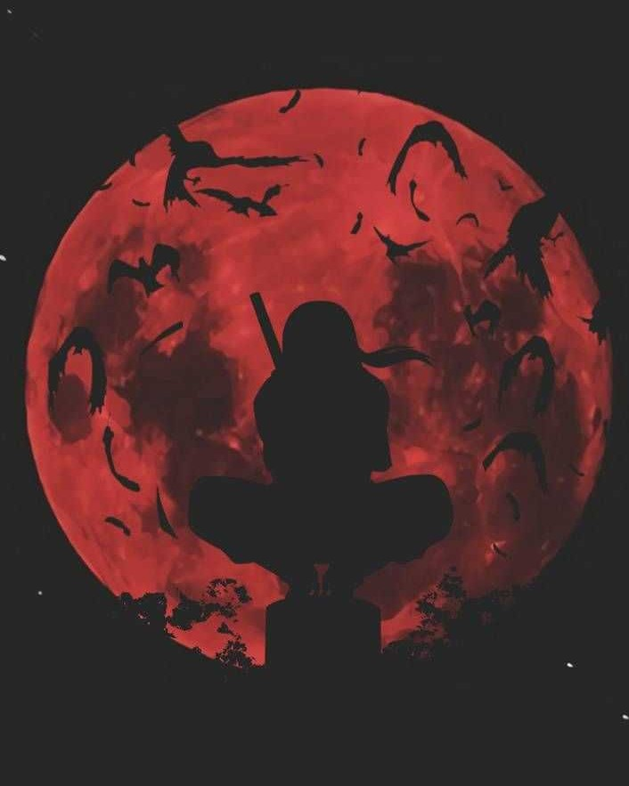

Itachi Uchiha

"People's lives don't end when they die. It ends when they lose faith."
- Itachi was the first child born to Mikoto and Fugaku Uchiha.
- His early childhood was marked with violence: when he was four years old, the Third Shinobi World War waged and he witnessed first-hand many of the war's casualties.
- At age 6, Itachi enrolled into the Academy, where he consistently scored the highest in each subject and quickly learned any skill taught to him, resulting in him being praised as the best of his generation.
- At age 11, he entered the Anbu.Itachi's accomplishments were a source of great pride for his family, his father viewing him as proof of the Uchiha's future prosperity and his brother viewing him as a model to live up to.
- He instead became a double agent, reporting the Uchiha's actions to the Third Hokage and the Konoha Council in the hopes it would help them find a peaceful resolution.
- He explained this to Itachi and left him a choice: support the Uchiha's coup and have the whole clan, including his brother Sasuke, killed in the ensuing conflict, or accept the assignment to wipe out the clan before the coup started and be allowed to spare Sasuke.
- At some point, Itachi contracted a terminal illness. He kept himself alive through the years with medicine and sheer will power so that he could live long enough to die by Sasuke's hand.
Awaken the Sharingan below to see more of Itachi